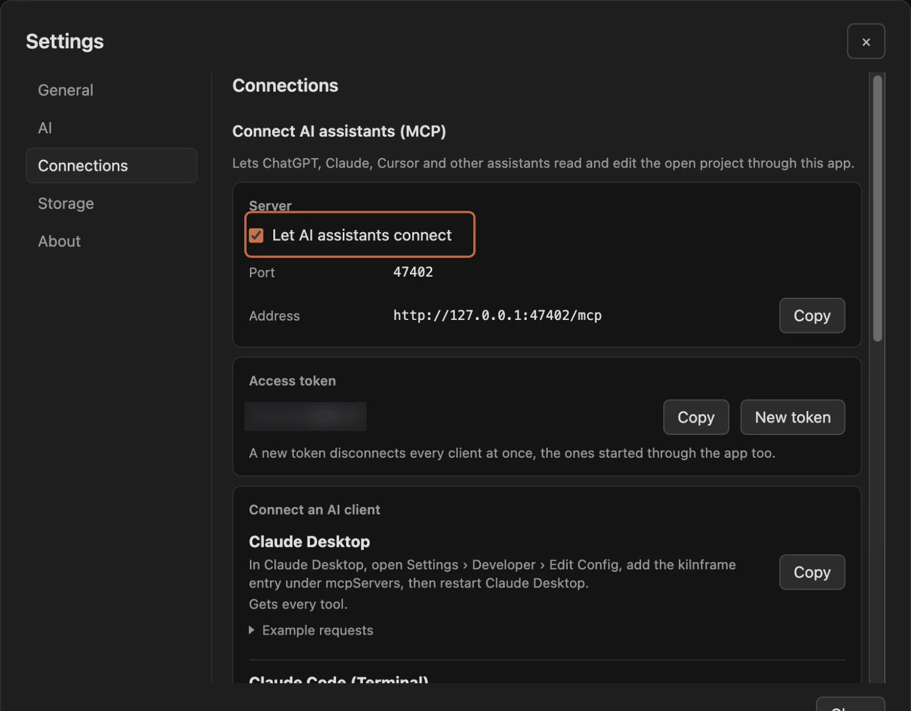
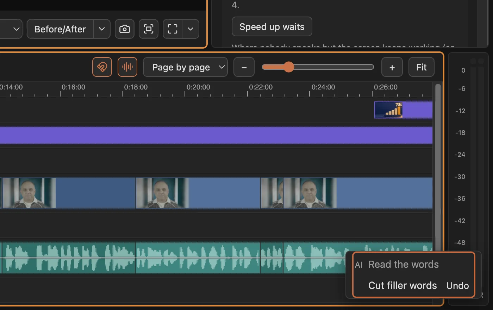

Connect AI assistants (MCP)
Kilnframe Desktop can be an MCP server: assistants such as Claude, ChatGPT, Codex and Cursor can then read the open project and edit it in everyday words. They use the same checked actions as the app's buttons, so every edit can be undone.

Turn it on
- Open ConnectionsSettings › Connections › Connect AI assistants (MCP).
- Switch it onTurn on Let AI assistants connect. The line under it says On, listening on port …
- Connect a clientUnder Connect an AI client, press the button for yours. It copies what that client needs; the card under it says where to paste it.
It works the same way on Mac, Windows and Linux. You do not need Node or anything else installed.
Each client
- Claude Desktop: in Claude Desktop open Settings › Developer › Edit Config, add the copied
kilnframeentry undermcpServers, then restart Claude Desktop. - Claude Code (Terminal): run the copied command in a terminal (PowerShell on Windows). Kilnframe then shows in Claude Code in every folder, the Code tab of Claude Desktop included. Open in Terminal and Copy with a first request save a step.
- ChatGPT: in the ChatGPT desktop app, add a local MCP server and paste the copied command.
- Codex: run the copied lines in a terminal before launching Codex.
- Cursor: Settings › MCP › Add new server, and add the copied entry under
mcpServers. - Other clients: copy the address and the token, and enter them as an HTTP MCP server.
Claude Desktop, ChatGPT and Codex start a small helper that comes with Kilnframe and finds the app even when its port changes. On a Mac, move Kilnframe Desktop to Applications before you copy their settings. ChatGPT on the web is not supported: the server stays on your computer on purpose. Each client also has Example requests to try.
The token
The server answers only this computer. Any program that has the Access token can edit the open project, so keep it private. New token makes another and disconnects every client at once; copy the commands again afterwards and restart Codex, ChatGPT and Claude Desktop. On a computer you share, turn the server off when you are not using it.
If the usual port is in use, the server listens on another for now and says so: copy the address again.
What the assistant can and cannot do
Nearly everything you can do in the window. But some things wait for you in the Kilnframe window: work that spends your paid AI key or subscription, a model download, an update, a problem report, a screen recording, picking the face for a blur, and a voice made like someone's. Files outside the project are saved through the window's own Save dialog, where you choose the place.
What the assistant changed shows in What the AI just did, with Undo, and as steps in History.
